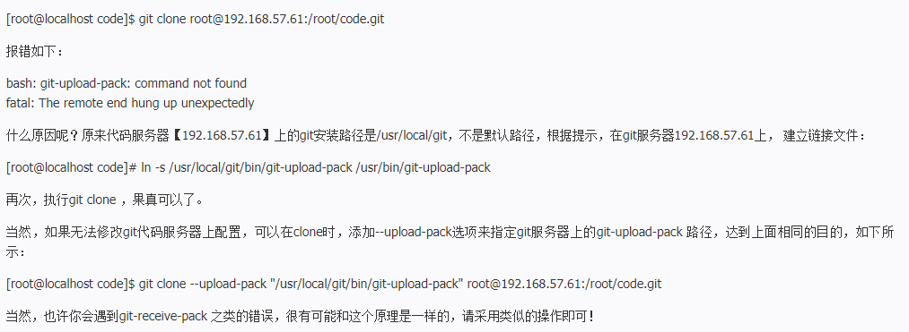

git自动化部署项目
Java spring boot 项目
使用git和docker 自动化部署spring boot 项目,默认一下流程用
root身份进行，普通用户登录请在一些命令前加sudo;
git操作
- 服务器上创建git仓库(假设仓库名称是times)
1 | git inint --bare times.git |
- 创建一些目录
1 | cd ~ |
- 编写自动化脚本(post-receive文件)
1 | unset GIT_DIR |
- 编写工作文件夹里面的部署
即
times.work文件夹下的work-hooks脚本
1 |
|
部署相关命令
cd /root/times.workvimcd
推送代码到远程仓库
- 简单版本每次推送都需要输密码
- 本地代码仓库添加远程仓库
git remote add aly-times root@106.15.179.33:/root/times.git - 推送本地代码去远程仓库
git push aly-times master如果出现代码冲突推送不上可直接git push -f aly-times master
常见问题和解决办法
- 报错
bash: ***:command not found
解决办法参看链接

最后补充和本节内容无关的内容
- 后台运行spring boot项目
nohup java -jar yourackage-version.jar >temp.log &
nohup – no hang up 意味保持执行不挂起之意。
& – 表示在后台执行进程 ，与&& 不同，&&代表执行前后两条指令。
– 这个是Linux重定向的命令，可以理解为可以将命令行输出的日志等内容重定向到制定的文件如上指令中的temp.log文件中。Linux重定向指令还有>>该指令和>的区别是，前者是追加写入，后者是覆盖写入。
- 停止运行的项目
- 通过运行
war包名称查找进程idps -ef|grep jenkins.war(jenkins.war,运行时运行的war包) - 或者 通过程序运行端口查找进程id 【Linux】
netstat -nlp |grep 8080【Windows】netstat -ano|findstr 8080 - 结束对应进程 【Linux】
kill 7832 pid【Windows】taskkill -F -PID 7832(7832,进程id)